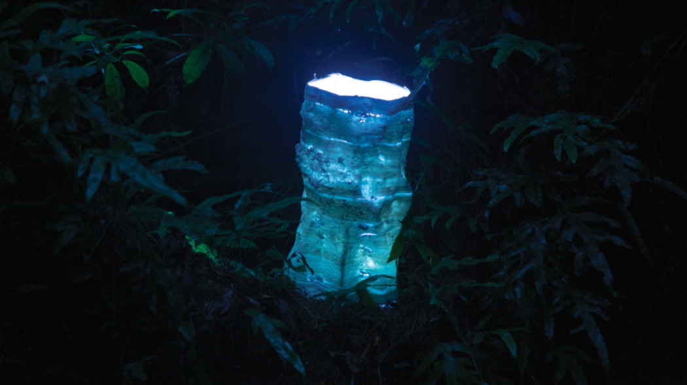
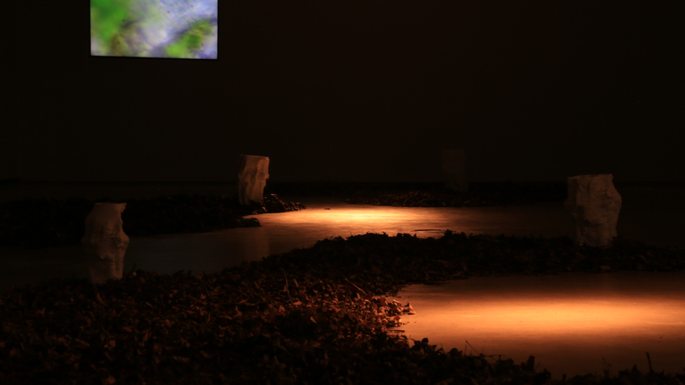

Finn Petrie is an interdisciplinary artist, musician, experimental game developer, and computer graphics and computer vision engineer. His work aims to foster and cultivate cognitive eco-systems -- whether through establishing ontological connections between us and non-humans in his art, developing audience interactive perfomances as a musician, or through implementing and researching emerging technologies to create mathematical puzzle games about perception and spatial intuition -- he is concerned with how technology can allow us a greater sense of life and connection on this planet.
Art and Technology
Epiphytic Memory (Public Installation)
+ Click For More Info

Epiphytic Memory (Gallery Installation)
+ Click For More Info

The Ghosts of Future Trees (Work in Progress)
+ Click For More Info

Porcelain Clouds (Light + Clay Study)
+ Click For More Info

Retipora (A Network of Pores)
+ Click For More Info

Research and Professional Development
Mirrored (Real Time Ray-Tracing as a Game Mechanic)
+ Click For More Info

Real Time Ray-Tracing
+ Click For More Info

Photogrammetric Debitage Analysis: Non-Invasive Archeology
+ Click For More Info

Music and Performance
Other Rooms (Bedroom Recorded Album)
+ Click For More Info

Sine Rave Performance
+ Click For More Info

Live Performance
+ Click For More Info


.JPG)